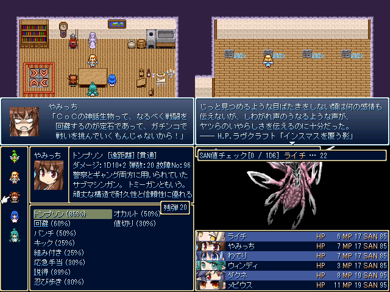

| No.69 てけりり☆ばすた～ず |
 |
|
| 作者：めざ | |
| ツクール：2000 | |
| ジャンル：CoC風ハクスラ | |
| 配信/投稿：可/可 | |
| 作者コメント： 神話生物と殴りあうゲームです。 戦闘システムやステータスなどを出来るだけ再現しています。 逃走しても敵のHPはリセットされませんが、味方のHPも回復しません。 先に全滅するのは果たしてどちらか…… |
|
| 管理人コメント： こういうの(右下)相手に組み付きを試みるとか正気の沙汰じゃないですよね。 あっ正気じゃないのか。 |
|
| ダウンロード(7.9MB) / 感想掲示板 | |
| 前の作品 / 次の作品 / TOPへ戻る | |